Una tabla de medias con letras convence a un revisor; una buena figura convence a un lector. El Bloque 6 construye, a partir del análisis del Bloque 5, una galería de figuras editables para cada resultado: medias con letras en cuatro presentaciones, diferencias con intervalos, curvas de respuesta, interacciones, mapas de calor, partición de la varianza y mapas de campo. Con estilos de revista, figuras multipanel y exportación por lotes a la resolución que se pida.
El Bloque 6 no calcula nada nuevo: dibuja el análisis que se hizo en el Bloque 5, con sus medias ajustadas, sus errores estándar, sus letras y su curva. Si al abrirlo aparece No analysis yet. Run Block 5 first, falta correr ese análisis o los datos cambiaron desde entonces; el botón Go to Block 5 lleva ahí.
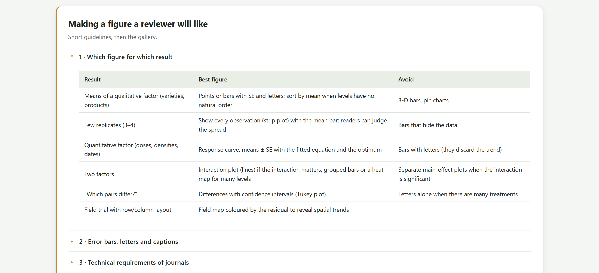
| Resultado | Mejor figura | Evitar |
|---|---|---|
| Medias de un factor cualitativo (variedades, productos) | Puntos o barras con EE y letras; ordenadas por la media si los niveles no tienen orden natural. | Barras en 3D, gráficos de pastel. |
| Pocas repeticiones (3 o 4) | Todas las observaciones con la media: el lector juzga la dispersión. | Barras que esconden los datos. |
| Factor cuantitativo (dosis, densidades, fechas) | Curva de respuesta: medias ± EE con la ecuación ajustada y el óptimo. | Barras con letras: descartan la tendencia. |
| Dos factores | Gráfico de interacción (líneas) si la interacción importa; barras agrupadas o mapa de calor si hay muchos niveles. | Figuras separadas de los efectos principales cuando la interacción es significativa. |
| «¿Qué pares difieren?» | Diferencias con intervalos de confianza. | Solo letras cuando hay muchos tratamientos. |
| Ensayo con filas y columnas | Mapa de campo coloreado por el residual para revelar tendencias espaciales. | — |
| Elemento | Cómo escribirlo |
|---|---|
| Qué son las barras | «Medias ± error estándar (n = 4)». Nunca implícito. |
| Qué significan las letras | «Medias con la misma letra no difieren significativamente (Tukey, α = 0.05)». La prueba va en el pie, no en el título. |
| Letras dobles | «ab» pertenece a los dos grupos; no se corrige a mano. |
| Eje Y | Las barras empiezan en cero; los puntos pueden hacer zoom, y el pie lo dice. |
| Unidades | En el rótulo del eje: «Rendimiento de grano (t ha⁻¹)». |
| Color | Paletas seguras para daltonismo (Okabe–Ito, Paul Tol) y, si se imprimirá en gris, marcadores o tipos de línea distintos además del color. |
Las figuras de la app ya escriben en el subtítulo el tipo de barra y la prueba de las letras. Copia esa información al pie antes de borrar el subtítulo.
La galería se arma sola al abrir el bloque y se reconstruye cada vez que el Bloque 5 produce un análisis nuevo. Arriba está la tarjeta Gallery settings; debajo, una tarjeta por resultado con sus figuras.
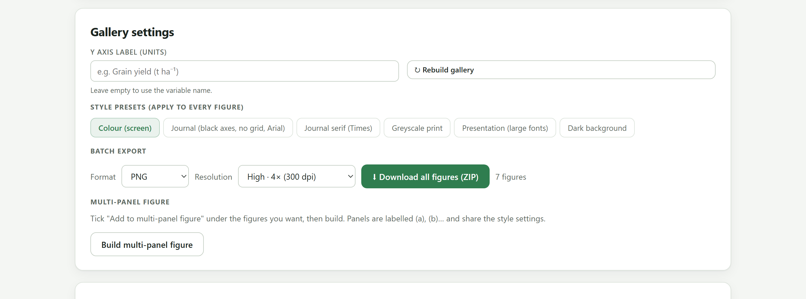
1 2 3 4 5Las figuras usan los nombres de las columnas tal como están en la tabla: Yield_t_ha, Nitrogen_kg_ha. Para una figura de artículo conviene escribir en Y axis label algo como «Rendimiento de grano (t ha⁻¹)» y pulsar Rebuild gallery. El rótulo del eje X y los títulos se cambian figura por figura en el editor (sección 7.3). Otra opción es nombrar bien las columnas desde la libreta de campo.
| Figura | Aparece por… | Qué muestra |
|---|---|---|
| Medias en barras | cada factor | Medias ajustadas ± EE con letras, eje desde cero. |
| Medias en puntos | cada factor | Las mismas medias con intervalos de confianza al 95 %, eje ajustado a los datos. |
| Caja con letras | cada factor | La distribución de las parcelas de cada nivel, con la media y las letras. |
| Observaciones con letras | cada factor | Cada parcela como un punto, la media ± EE y las letras. |
| Diferencias con intervalos | cada factor | Cada par de medias con su diferencia ± diferencia crítica de la prueba; en rojo las significativas. |
| Curva de respuesta | cada factor cuantitativo con 3 o más niveles | Medias con letras y la curva polinomial ajustada, su ecuación y el óptimo. |
| Gráfico de interacción (dos orientaciones) | cada par de factores con interacción en el modelo | Líneas con letras de efectos simples: los niveles del segundo factor dentro de cada nivel del primero. |
| Barras agrupadas | ídem | Las combinaciones con letras de la comparación conjunta (o de los efectos simples en parcelas divididas). |
| Mapa de calor de celdas | ídem | La tabla de dos vías coloreada por la media, con letras. |
| Partición de la varianza | siempre | Qué fracción de la suma de cuadrados total corresponde a cada fuente y al error. |
| Mapas de campo (respuesta y residuales) | diseños con fila y columna | El ensayo como estaba en el campo, coloreado por la respuesta y por el residual. |
Para cada factor, la galería ofrece el mismo resultado en cuatro formas. No es redundancia: cada revista, cada número de repeticiones y cada público piden una distinta.
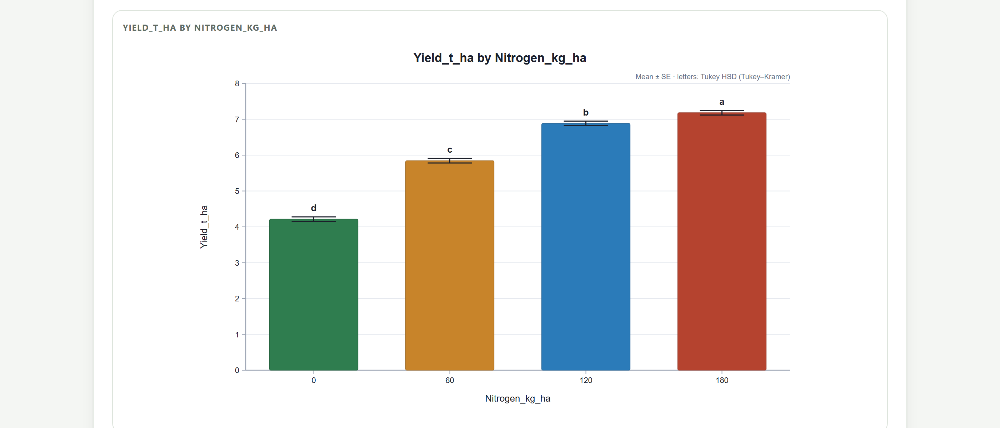
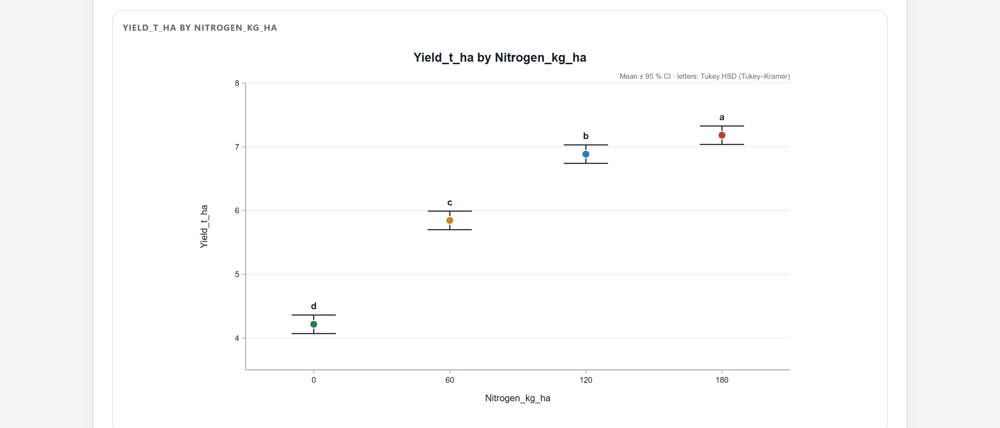
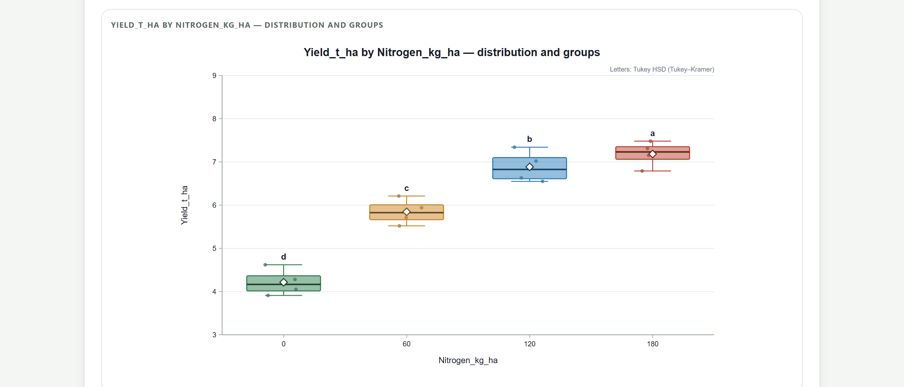
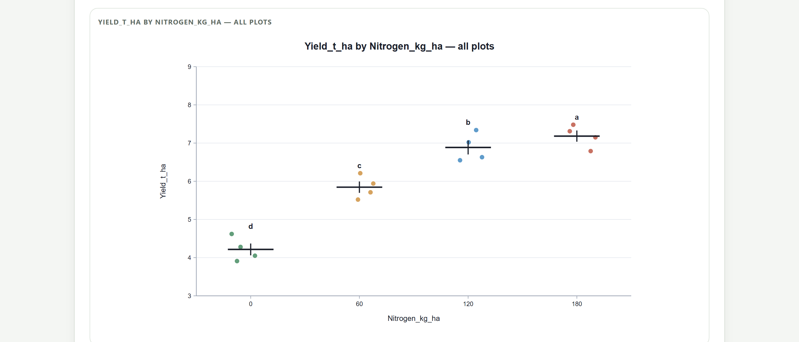
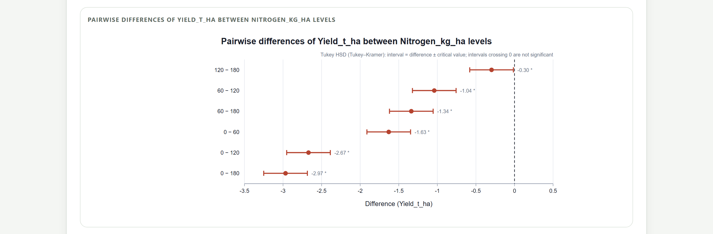
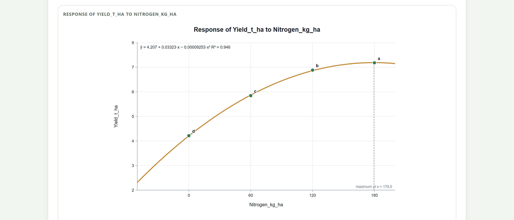
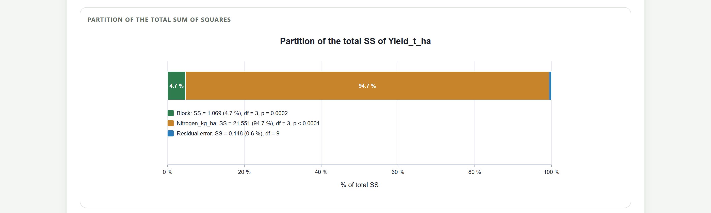
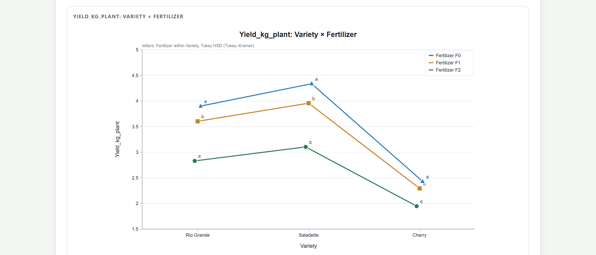
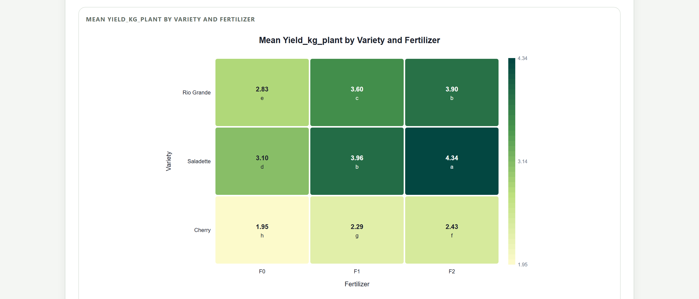
En el gráfico de interacción, cuando dos medias casi coinciden (Cherry con F1 y F2 en la figura 7.10), sus letras pueden encimarse. Hay tres salidas: reducir Letter size en el editor, desactivar Letters at each point y usar las barras agrupadas o el mapa de calor, donde cada celda tiene su espacio, o exportar en SVG y mover la letra en un editor vectorial.
Cuando el diseño tiene fila y columna, la galería dibuja el croquis real del ensayo dos veces: coloreado por la respuesta y coloreado por el residual del modelo. El segundo es una herramienta de diagnóstico: si los residuales positivos se juntan en una esquina o en una franja, hay una tendencia espacial que el diseño no absorbió.
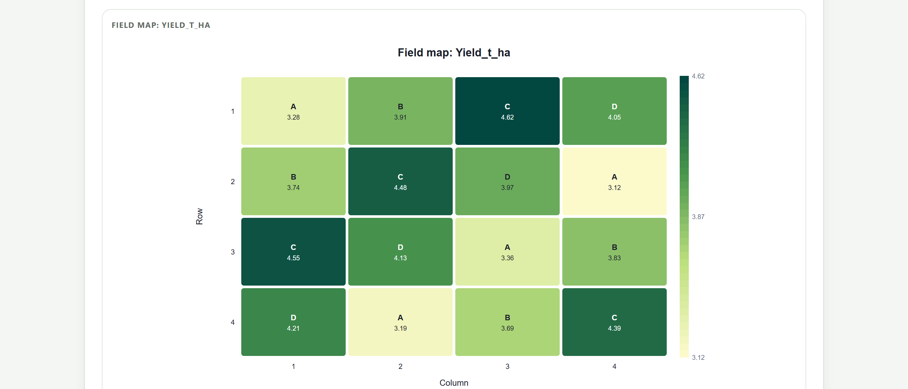
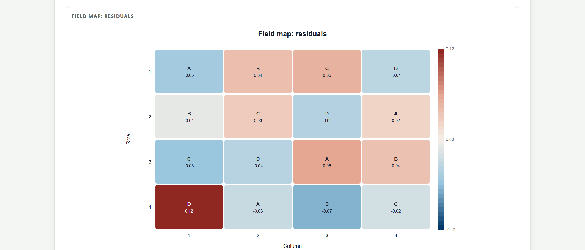
| Si los colores… | entonces… |
|---|---|
| se reparten sin patrón, como un tablero al azar | El diseño absorbió la variación del terreno. Lo esperado. |
| forman una franja del mismo signo a lo largo de una fila o columna | Un gradiente que el bloqueo no capturó; en el siguiente ensayo, orienta los bloques perpendiculares a esa franja. |
| forman una mancha en una esquina | Un problema local (encharcamiento, borde, sombra); revisa la libreta. |
| destacan en una sola parcela | Una parcela sospechosa; compárala con la tabla de observaciones sospechosas del Bloque 4. |
La casilla Centre the colour scale at zero viene activada en el mapa de residuales para que el color neutro corresponda a un residual nulo.
Los botones de Style presets cambian a la vez el tema, la tipografía, la rejilla y el tamaño de letra de todas las figuras de la galería, y se recuerdan para las figuras que se dibujen después en cualquier bloque.
| Botón | Qué cambia | Para… |
|---|---|---|
| Colour (screen) | Tema claro, Helvetica, rejilla, paleta AgriDesign. | Trabajar en pantalla; también devuelve el color tras el gris. |
| Journal (black axes, no grid, Arial) | Ejes negros, sin rejilla, Arial, letra 10 % mayor. | La mayoría de las revistas. |
| Journal serif (Times) | Igual, con Times New Roman. | Revistas y tesis con tipografía serif. |
| Greyscale print | Estilo de revista con paleta en grises. | Impresión en blanco y negro. |
| Presentation (large fonts) | Letra 50 % mayor, títulos de ejes en negrita, rejilla punteada. | Diapositivas y carteles. |
| Dark background | Fondo oscuro, letra 20 % mayor. | Presentaciones con fondo oscuro. |
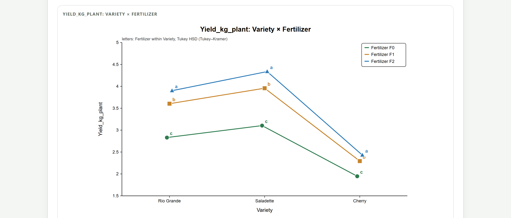
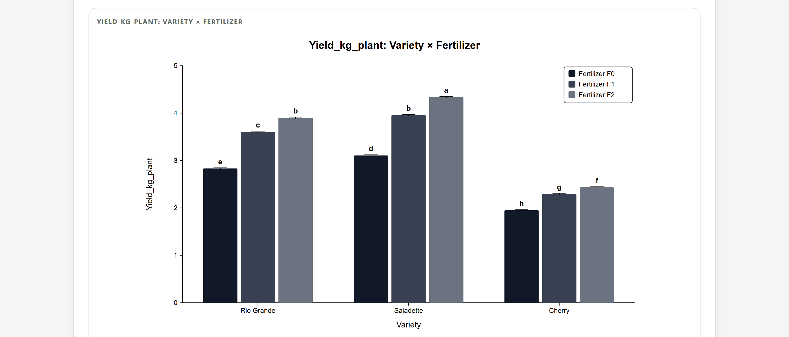
Cada figura tiene debajo el enlace Edit figure — titles, colours, fonts, sizes, que abre un editor de dos pestañas, y la barra de exportación. Los cambios se ven al instante. El editor ya se presentó en el capítulo 4 (figura 4.16) con la pestaña de contenido; aquí se muestra la de estilo, común a todas las figuras.
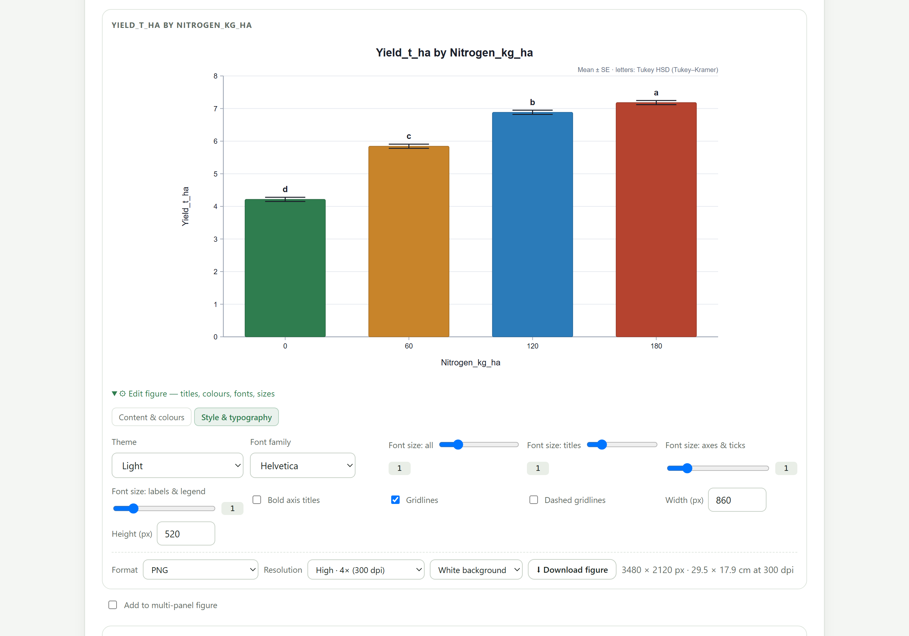
1 2 3 4 5 6 7| Figura | Opciones propias |
|---|---|
| Todas | Título, subtítulo, rótulos de los ejes. |
| Medias (barras y puntos) | Estilo (barras, puntos o paleta), barras de error (EE, DE, IC al 95 %, ninguna), letras, valores impresos, ordenar por la media, eje desde cero, ancho de barra, tamaño de letra, color único o por nivel. |
| Caja y observaciones | Paleta o color único, observaciones, marcador de la media, letras, eje desde cero, ancho de caja o dispersión horizontal, tamaño de punto y de letra; en observaciones, la barra de media (EE, DE, IC o solo la media). |
| Diferencias | Color de las no significativas y de las significativas, ordenar por la diferencia, valores impresos. |
| Interacción | Paleta, color por serie, posición de la leyenda, grosor de línea, tamaño del marcador, tipos de línea distintos, barras de error, letras en cada punto, eje desde cero, tamaño de letra. |
| Mapa de calor y mapas de campo | Mapa de colores (13, incluidos Viridis y Cividis, seguro para daltonismo), valores y letras o etiquetas impresas, decimales; en los mapas de campo, centrar la escala en cero. |
| Partición de la varianza | Paleta, color por fuente, porcentajes impresos. |
Las opciones marcadas como compartidas (tema, tipografía, tamaños de letra, rejilla) se guardan en el navegador y se aplican a las figuras que se dibujen después. Los títulos, rótulos, colores por nivel y dimensiones son de cada figura. Al reconstruir la galería (Rebuild gallery o un análisis nuevo) las ediciones individuales se pierden: termina el análisis antes de pulir las figuras.
Las revistas piden a menudo varias gráficas en una sola figura con paneles (a), (b), (c). Bajo cada figura de la galería hay una casilla Add to multi-panel figure; se marcan de dos a ocho y se pulsa Build multi-panel figure en los ajustes de la galería. El compositor acomoda los paneles en una o dos columnas (tres si son más de cuatro), los rotula y los muestra bajo los ajustes.
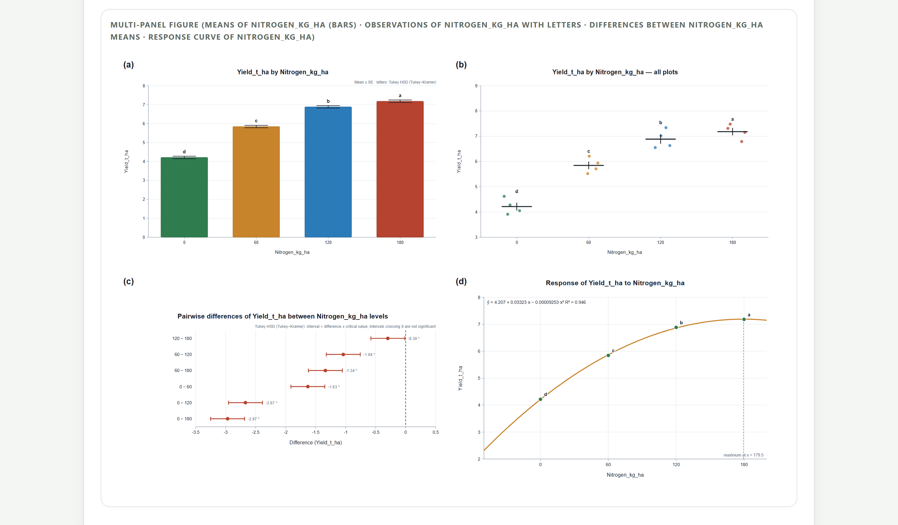
| Opción | Qué hace |
|---|---|
| Columns | Número de columnas de la rejilla, de 1 a 4. |
| Panel labels | (a) (b) (c), A B C, a b c o sin rótulos. |
| Label size | Tamaño de los rótulos de panel. |
| Gap between panels | Espacio entre paneles. |
| Keep panel titles | Conserva o quita el título de cada panel; en un artículo se suelen quitar y describir en el pie. |
Si dos paneles muestran la misma variable para comparar tratamientos o años, deben tener la misma escala en el eje Y; de lo contrario el lector compara alturas que no son comparables. Ajusta Y axis from zero o las dimensiones de cada figura antes de marcarla, y edita cada panel en la galería: el compositor toma las figuras tal como están en ese momento.
Cada figura se descarga sola con su barra de exportación, y todas juntas con Download all figures (ZIP).
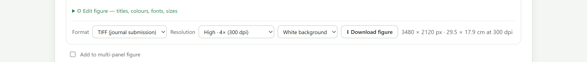
| Formato | Cuándo usarlo |
|---|---|
| TIFF | El que piden muchas revistas para el envío. Sin compresión y con la resolución grabada en el archivo. |
| PNG | Documentos, tesis y la mayoría de las revistas; sin pérdida, archivo pequeño, con la resolución grabada. Admite fondo transparente. |
| SVG | Vectorial: se amplía sin perder nitidez y se edita en Inkscape, Illustrator o PowerPoint. Si la revista pide EPS o PDF, se convierte desde Inkscape. |
| JPG · WEBP | Solo para la web o fotografías; comprimen con pérdida y emborronan letras y líneas finas. |
| Opción | Multiplica el tamaño base | dpi grabados | Uso |
|---|---|---|---|
| Screen · 2× (150 dpi) | ×2 | 150 | Pantalla, borradores. |
| High · 4× (300 dpi) | ×4 | 300 | Figuras en color y medios tonos (predeterminada). |
| Very high · 6× (450 dpi) | ×6 | 450 | Figuras combinadas de línea y color. |
| Publication · 8× (600 dpi) | ×8 | 600 | Arte de línea: gráficas sin sombreados. |
| Maximum · 12× (900 dpi) | ×12 | 900 | Revistas con requisitos de 900 a 1000 dpi para línea. |
Lo que la revista revisa es cuántos píxeles tiene la figura al ancho al que se va a imprimir. Una columna mide cerca de 8.5 cm y una página completa, 17.5 cm; a 300 dpi eso son 1004 y 2067 píxeles de ancho. La app graba en el archivo los dpi de la opción elegida y muestra el tamaño físico que corresponde (29.5 cm para la figura de barras exportada a 4×, 3480 píxeles), pero la revista reducirá la figura a su columna: 3480 píxeles en 17.5 cm equivalen a 505 dpi, de sobra. Lo que sí hay que vigilar al reducir es el tamaño de la letra, que se encoge en la misma proporción.
| Destino | Ancho final | Width (px) | Font size: all | Resolución | Resultado aproximado |
|---|---|---|---|---|---|
| Doble columna | 17.5 cm | 860 (predeterminado) | 1.3 | 4× o 8× | Marcas de 8 pt, rótulos de 10 pt; unos 3500 o 7000 px de ancho. |
| Una columna | 8.5 cm | 600 | 1.8 | 4× | Marcas de 8 pt, rótulos de 9 pt; 2400 px de ancho. |
| Diapositiva | pantalla completa | 1200 | preset Presentation | 2× | 2400 px, letra legible desde el fondo de la sala. |
Yield_t_ha_figures_300dpi.zip, contiene todas las figuras de la galería, la multipanel si la construiste, y un README.txt con la respuesta, el diseño, la prueba de medias, α y la resolución.Cada figura se guarda con un nombre que describe su contenido: Yield_t_ha_Nitrogen_kg_ha_bars.png, …_curve.tif, …_interaction.svg, …_field_residuals.png. Así se ordenan solas en la carpeta del manuscrito.
Cada resultado tiene su figura: letras para factores cualitativos, curvas para cuantitativos, líneas o mapas de calor para interacciones y mapas de campo para revisar el terreno. El estilo se decide una vez para toda la galería; los rótulos y colores, figura por figura. Y la resolución se piensa al revés: primero el ancho y el tamaño de letra al que se imprimirá, después los píxeles.
Con las figuras listas, falta reunirlo todo. El capítulo del Bloque 7 presenta el informe automático con métodos redactados, tablas y figuras tal como las editaste, su impresión a PDF y el paquete ZIP con datos, tablas y figuras.